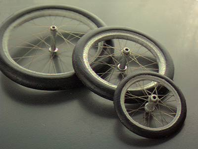

for early flying machines
| After a year of research and development I changed the materials I used in these spoked wheels. Originally laminated balsa, the rim/tire is now a resin part, significantly lightened to reduce weight as much as possible. This was changed in order to provide a finished part with a much smoother surface, and better detail than could be achieved with balsa. The rest of the construction has remained the same. Aluminium for the hubs and tinted monofilament spokes, holding them all together. |  Shown above are 3/4", 1 1/8", and 1 1/2" examples |
||||||||||||||||
Surprisingly strong, they are also extremely light weight. Indeed, despite the better detail and painted finish, they are only slightly heavier than the previous unfinished balsa wheels. Recent production averaged the following weights.
For another view of the wheels, check out Dave Rees's Plage Torpedo Monoplane. It is the first model to feature the new resin wheels in photographs. Unfortunately, this fine model flew O.O.S. at the 1998 F.A.C. Nationals. (Note that as of January 2000 I am no longer offering these wheels for sale.) |
|||||||||||||||||
return to
home page | thumbnails | Tatin Aero Torpille
Copyright 1998-2009, Thayer Syme All rights reserved